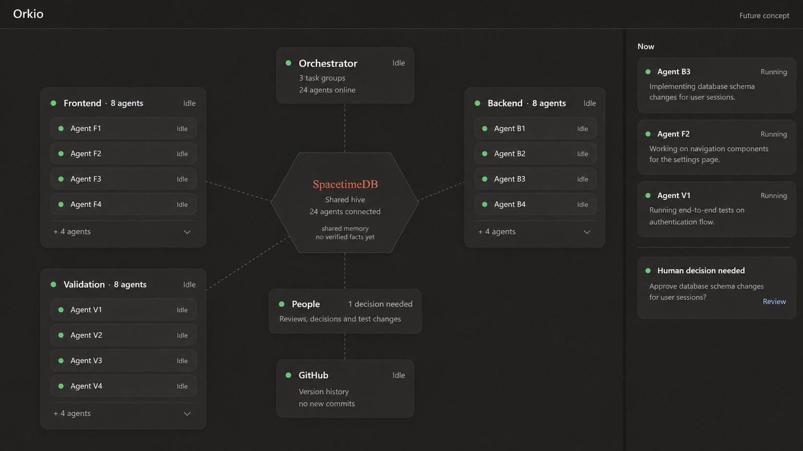

01 / Summary
Orkio
Your agents finished.
Does their code work together?
Connecting AI coding agents from different hardware to work together
02 / Problem
Limitations of Existing Solution
Merge: Clean merges can still break the app
Human: People have to coordinate the repair
03 / Solution
Our Solution
Find failures in combined code and route repair context to the assigned agent.
Coordinate tasks across agents and track who owns each repair.
Shared hive feature
Bring people in when a change needs judgment or approval.
Keep work-in-progress snapshots traceable while checking how changes work together.
04 / Benchmark
Our Product's Performance
| Metric | Orkio | GitHub (Traditional) |
|---|---|---|
| Human interference | To measure | To measure |
| Time | To measure | To measure |
| Token | To measure | To measure |
| Quality/Logic | To measure | To measure |
We haven’t collected these results yet. We’ll use the same model versions, starting code, and budgets, and report how many runs we measured.
05 / Technical details
Technical Complexities
Hooks + MCP
Hooks push snapshots to GitHub branches named wip/<agent>. Through MCP, an agent can share its plans and read updates from teammates.
Droid SDK
The watcher combines snapshots with main in a temporary worktree. It runs TypeScript and Vitest, then checks individual agents and pairs to narrow down a failure.
SpacetimeDB
- Real Time Data TransferAgents need real-time feedback while coding.
- Heavy NumbersSupports concurrent reads and transfers across many agents.
- Backend OperationRuns shared backend logic as well as storing data.
Orchestrator
Coordinates tasks and repair ownership across agents, tracks progress, and brings in a person when review is needed.
Future UI
